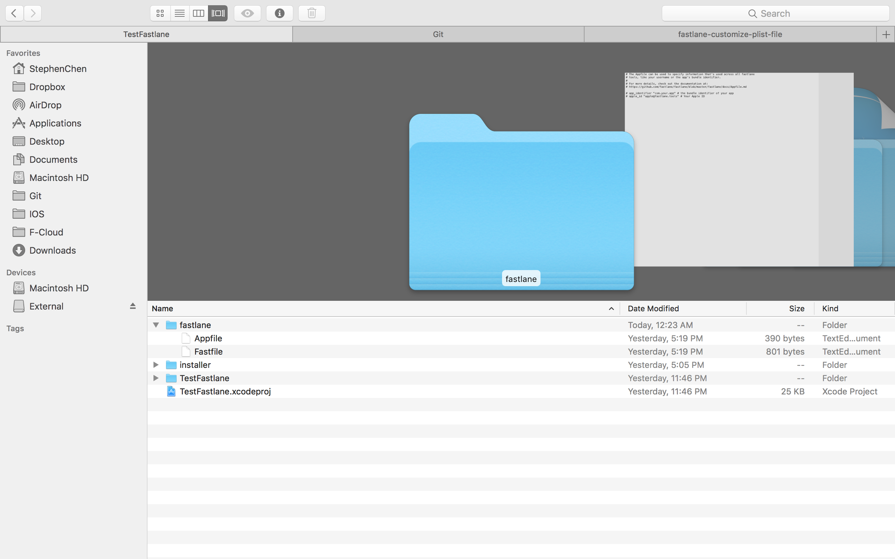
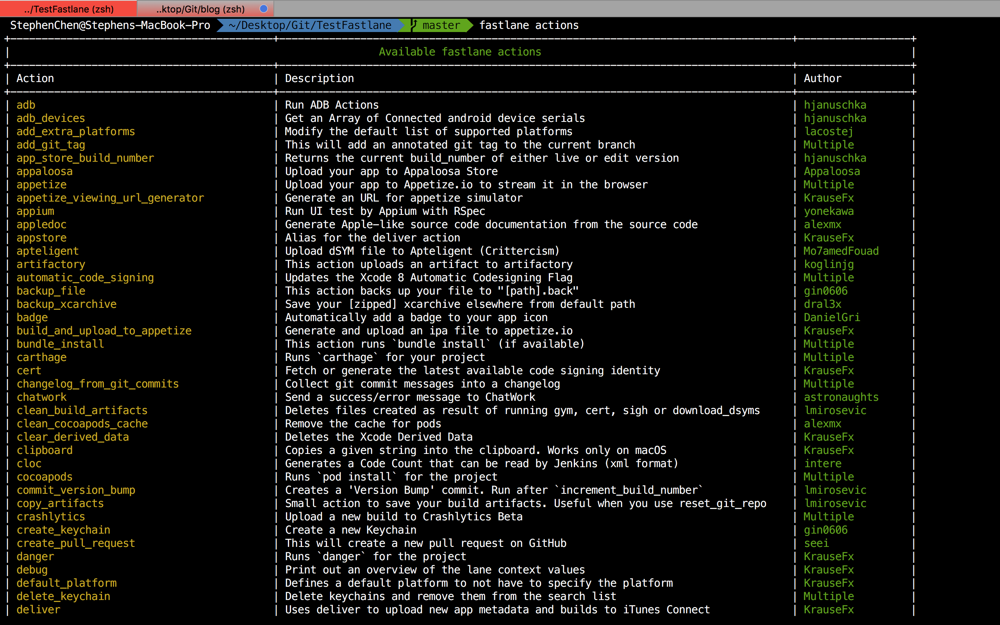
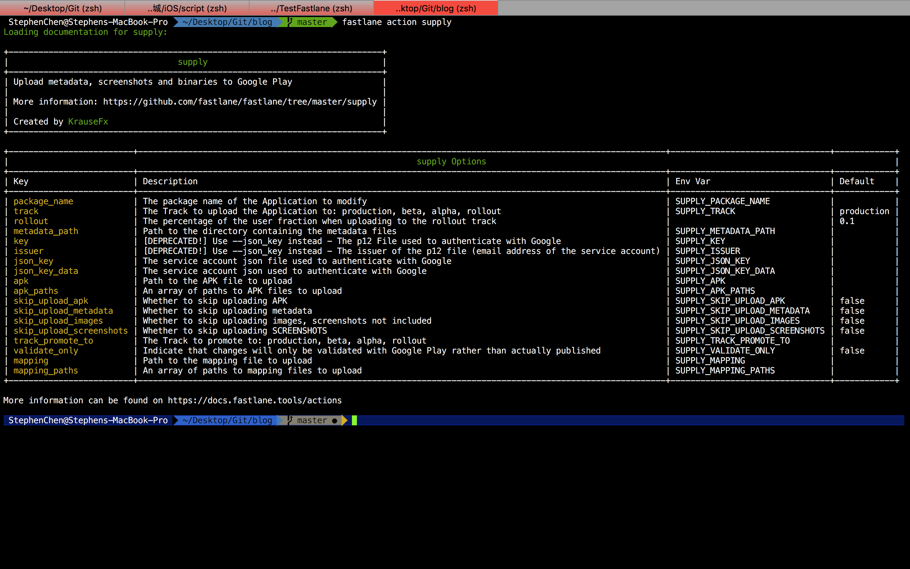
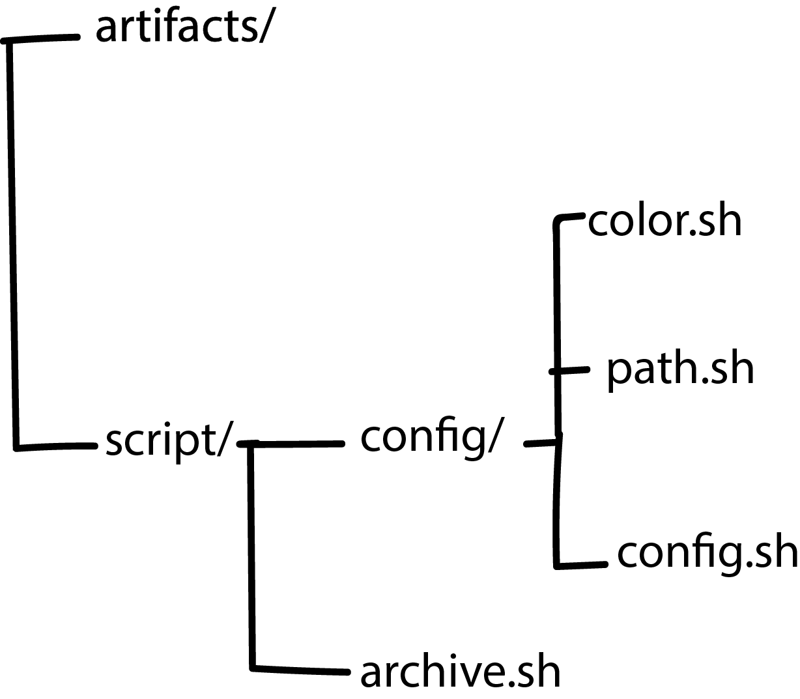
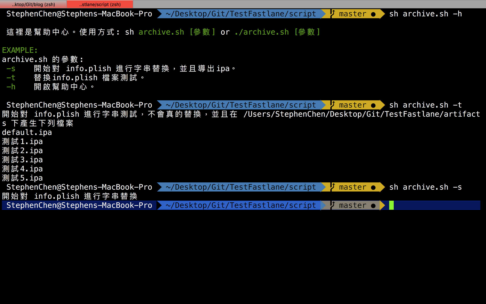

Integrate fastlane save your time .
fastlane + script 一鍵產出多種 .ipa 檔。
使用環境
|
|
自身面臨的情況
因工作所需，需要發布 企業內部使用，並打包成不同形式的 .ipa 上架擋案。換句話說，假設我要產生 10 個 擁有不同 Info.plist 的 .ipa 檔案，如果手動的話我不就要改到死了？每次 Archive 都要等很久，然後結束之後在改 Info.plist 上的參數然後再 Archive 然後再上架。
本篇分享概要
因為官方文檔其實非常詳細，所以這邊只分享大致流程，並不打算寫的太詳細。
如何自動上架
目前iOS我知道打包除了手動之外，還有幾種方式分別是xcodebuild和xctool，而今天要使用的是把這些神器打包好的神器 fastlane
如何自動更新 Info.plist 的參數
這邊我打算使用 sed 來完成替換 Info.plist 內部參數。
附帶一提，這邊情況適用我自己而已，其實任何在專案內部的檔案，圖片都可以進行變更，包括上架到 AppStore，Screenshot，Test，管理證書都可以。It’s all depending on you.
結合兩者 Fastlane + Script
步驟1：完成 Fastlane 的安裝
- 安裝 homebrew
|
|
- 透過 homebrew 來安裝 fastlane
|
|
步驟2：Fastlane 的初始化設定
- 第一種：(建議）
透過 官方提供的文檔來產生初始化的程式碼
- 第二種：開啟 Terminal 到當前 iOS 的資料夾下，並且跟著輸入帳號跟相關的資料
|
|

那兩種哪邊不一樣呢？，第一種其實已經幫你把程式碼初始化了，讓你少去比較多的步驟，接著我們打開 Fastlane 來看一下的 Code。
|
|
其實他的公式非常簡單，就是把上面我打中文的地方替換成所需要的參數，你可以想像成宣告一個Class，然後裡面給予他n個 key:value 型態的變數，那方法有哪些呢？依造官方有很多，比如 deliver 或者 supply 之類的…，以下是所有的 actions 列表

這邊翻譯官方的幾個比較常用的 Commands
| Commands | Description |
|---|---|
| fastlane actions | 把所有的actions列出來 |
| fastlane lanes | 把所有在 Fastlane 檔案底下的 lane 和 描述列出來 |
| fastlane list | 同上，但是不把描述列出來 |
| fastlane new_action | 創造一個新的 actions |
| fastlane env | 這是當你有問題的時候，可以幫你把環境快速的列出來好放到 issue 給別人看 |
另外翻譯官方重點 actions，外加幾個我感覺比較常用的＠＠
| 常用Actions名稱 | Description |
|---|---|
| deliver | 上傳screenshots，metadata到 App Store |
| supply | 上傳 Android app，metadata到 Google Play |
| snapshot | 自動幫你在地化的方式拍照，支援 iOS and tvOS |
| screengrab | 自動幫你的 Android App 在地化的方式拍照，支援 iOS and tvOS |
| frameit | 幫你把 screenshots 放到正確的機型 |
| pem | 自動幫你產生和更新推播憑證 |
| sigh | 產生 provisioning profile |
| produce | 自動產生新的 iOS App 在iTunes Connect |
| cert | 自動產生跟管理 iOS code signing certificates |
| spaceship | 一個可以存取 Apple Dev Center and iTunes Connect 的 Ruby 函式庫 |
| pilot | 管理 TestFlight 的使用者 |
| boarding | 邀請新使用者到 TestFlight |
| gym | 自動產生 .ipa 檔案 |
| match | 用git來同步憑證和證書，解決多人開發問題 |
| scan | 跑專案的測試 |
| slack | 對 slack 進行通知 |
那方法的參數有哪些呢？請在 Terminal 打上 fastlane action [方法]，比如我想要看 supply 有哪些參數，那就
|
|

像我自己要產生 ipa 檔案的話就要看 gym
|
|

接著就慢慢看囉～想要什麼就打什麼需要什麼就打什麼。在依序填入到上面的公式
步驟3：執行 Fastlane
fastlane [公式名稱]，如上圖我的名稱是 BABABA，那就在終端機上打以下指令
|
|
這邊也許會遇到一些環境問題，以及安裝問題，這時候就要一個一個自己去解決了，每個人遇到的問題不太一樣，可以留言在下面互相討論。不過有個問題我也覺得非常麻煩，我把這問題寫在最下面的 TroubleShooting 部分
步驟4：跟著範例走
這邊有很多開源分享他們的 Fastlane 開源檔案。
步驟5：循環步驟4
這邊一定要想成功，不然之後再結合 script 的時候問題會更多。
Script
這部分就比較簡單了，我把 code 放在 github 上。大致架構圖如下

這邊的架構是所有跟 script 相關的 .sh 檔案都會在 script 資料夾底下，透過 sed 會去執行變更 Info.plish 檔案裡面的變數，參數設定則是放在 script/config 裡面。
在終端機底下執行
|
|

TroubleShooting
Connection reset by peer - SSL_connect
因為我的 ruby 版本是 2.0.0，蘋果最近把服務器的TLS版本更新到 TLS 1.2，在我當前的 ruby 是不支持的，所以我要想辦法升級到 支援 TLS 1.2的 ruby 版本。

在解決問題之前，我想分享一些我個人覺得蠻需要被了解的基礎，就是因為我也對 ruby 不了解，所以吃了不少虧在解決這個問題上
首先安裝 ruby 可以透過 homebrew ， rbenv 以及 rvm，一台電腦可能有很多 ruby 的版本存在，你必須讓你當前的 ruby 版本使用可以支援 TLS 1.2 的版本，不管你是用什麼套件安裝，但我個人這邊的問題是當初我忘記我用什麼來安裝的。
對於不知道用什麼來安裝的囧情況，我用了最笨的方法來檢查我是不是有以上三個套件
這下好了，很幸運的我並沒有使用 brew 安裝。但我有可能是使用 rvm 或者是 rbenv 安裝。之後我又奮鬥了很久？茫茫大海之中，我看到了這段
Hey everyone, we’ve been working on a new way to install and use fastlane, all you have to do is to download fastlane.zip and double click the install file. This will install fastlane with all its Ruby and OpenSSL dependencies, and should all work out of the box.
We just finished building this, and would love your early feedback on this beta. Please let us know how it works for you and if you run into any problems 👍
Download the latest version here.
大意就是他把 fastlane 所需要的 dependencies 全部放在 ~./fastlane/bin 底下，這就是整個程式，有點類似 docker 的感覺，安裝好之後，我的問題也解決了。
Reference
cert fails with error ‘Connection reset by peer - SSL_connect’